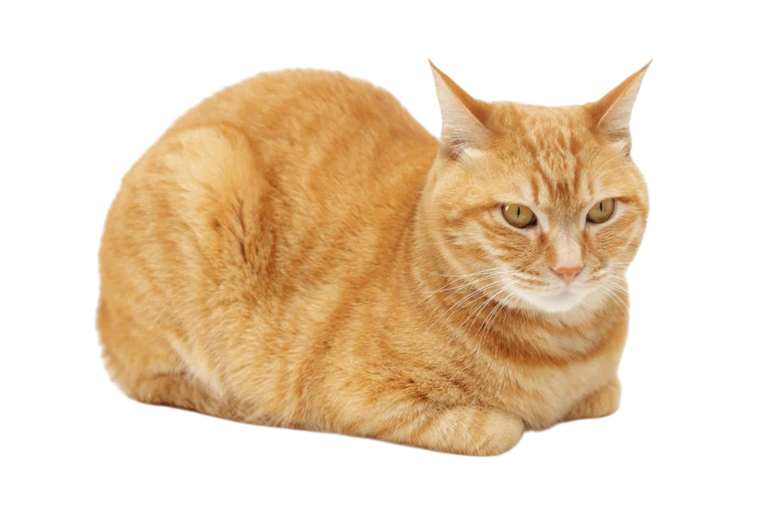
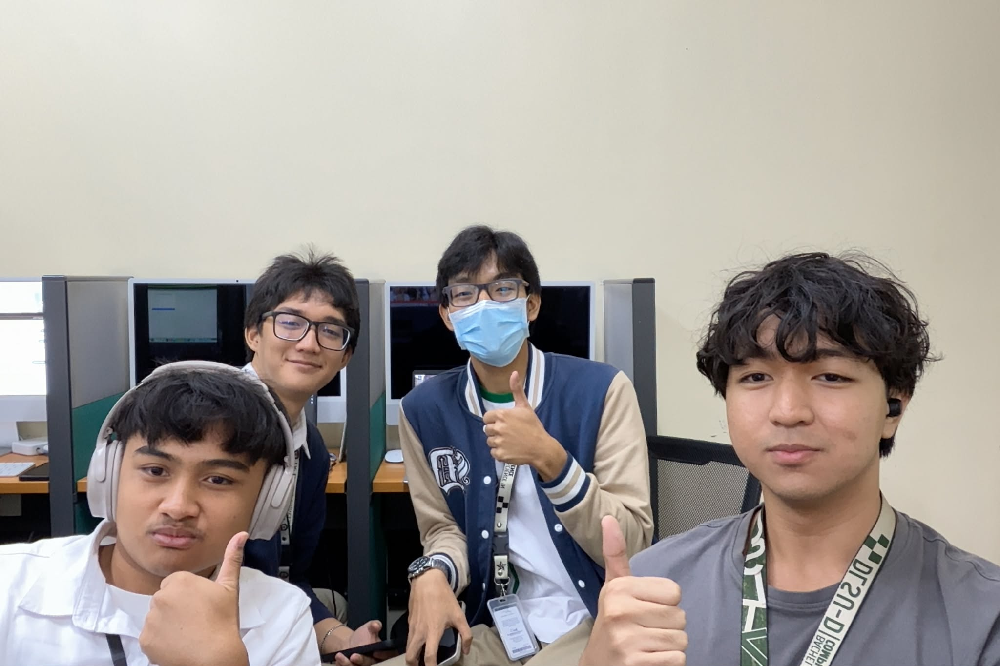

About Us

At Tail Mates, our mission is simple: to connect loving homes with animals in need. We believe every pet deserves safety, care, and a family that will cherish them for life. Whether you’re looking to adopt a loyal companion or help a rescued animal find a new beginning, Tail Mates is here to make that journey easy, meaningful, and rewarding.
We work with shelters, rescuers, and foster families to showcase pets who are ready for adoption. Our platform is designed to provide clear information, honest profiles, and a smooth adoption process — so you can focus on building a lifelong bond with your future best friend.

Beyond adoption, Tail Mates is about community. We aim to promote responsible pet ownership, compassion for animals, and awareness about rescue efforts. Every adoption creates space for another animal in need, and together, we can make a real difference.